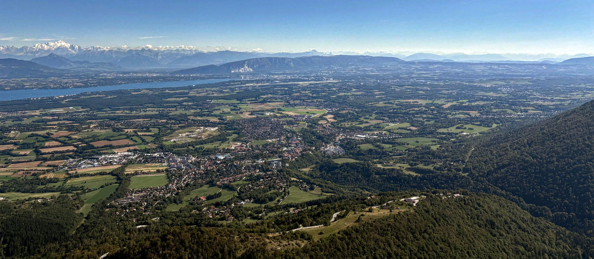
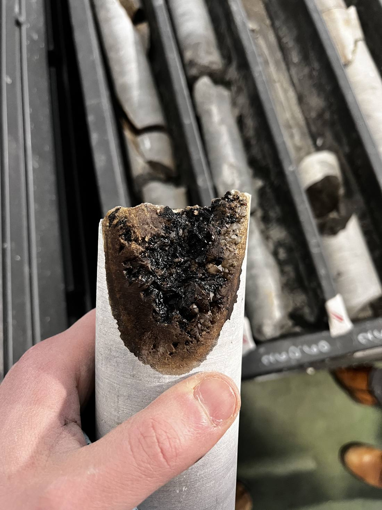
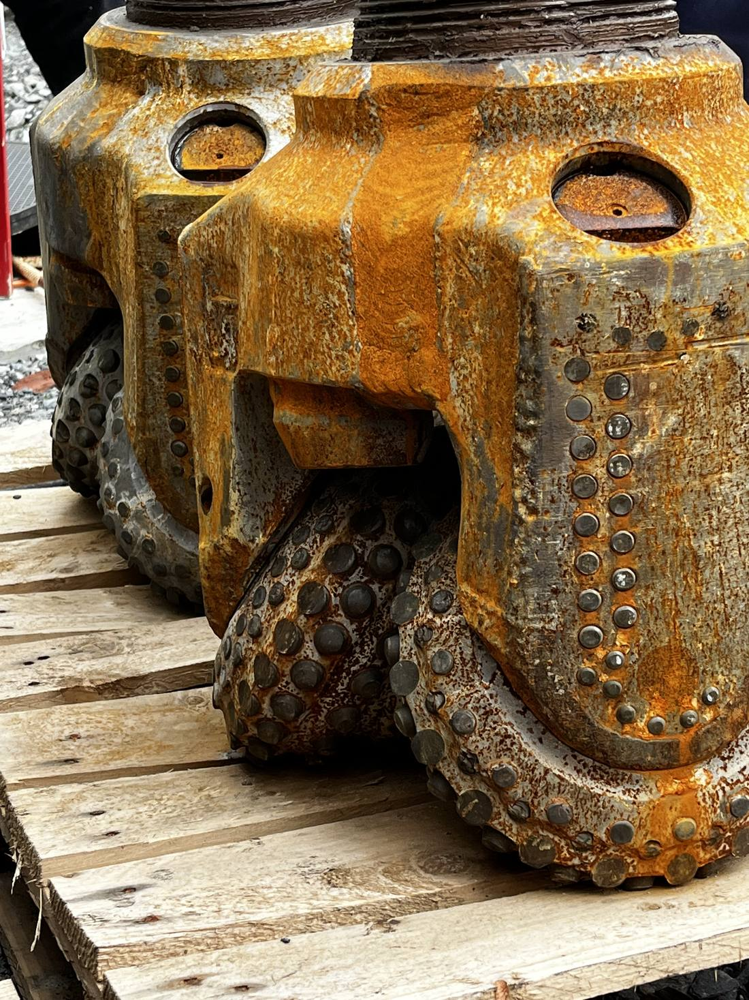

Geoscientist at the University of Geneva.
From the pore to the basin, I study how rocks become reservoirs, and how the subsurface can store heat, deliver geothermal energy or lock away CO₂.
Profile

Careeryoungest at the top
Projects
Past projects

In the fieldtap a photo to enlarge
Publications38 in total
My name is shown in colour in each author list. Five further conference presentations (AAPG, EAGE, SGM, SEPM) are not listed here.